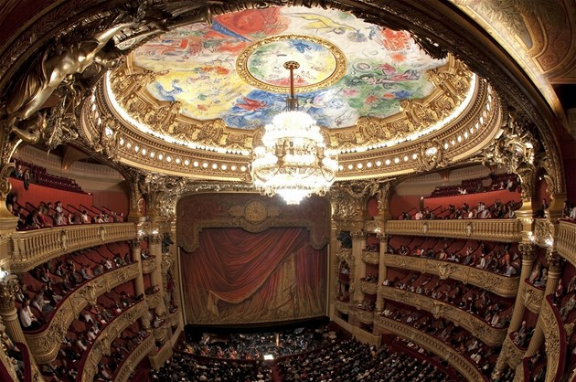
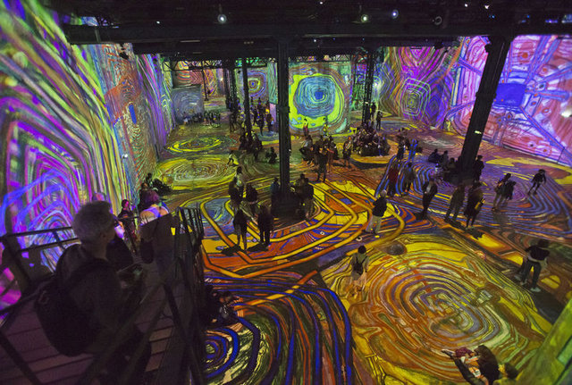
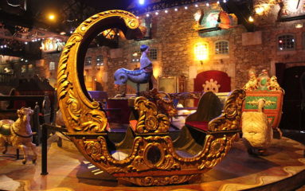
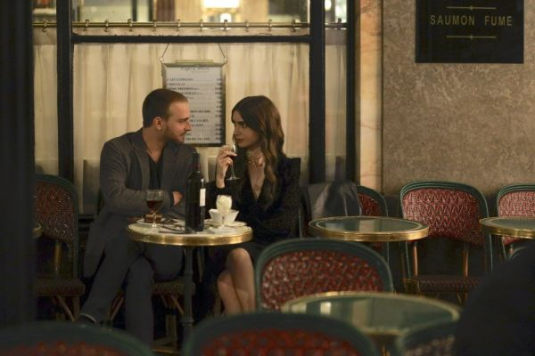

Si eres fan de la serie “Emili en Paris” en este pequeño artículo te hemos reunido los 5 lugares de rodaje que tienes que visitar para sumergirte en el mundo de la serie como si estuvieras allí.
Primero te proporcionamos la lista de los lugares y más adelante la información adicional sobre estos magníficos sitios.
Emily es una chica healthy y a la que le gusta cuidarse: casi todas las mañanas va a correr por los jardines de Luxemburgo. Diseñados en 1612 bajo las órdenes de María de Médicis, los Jardines de Luxemburgo son los jardines más céntricos y bellos de París. Son también uno de los lugares más populares de la ciudad tanto para los parisinos como para los turistas, y están llenos de increíbles jardines, extensos céspedes, paseos arbolados, estanques e incluso una pintoresca fuente construida en 1620.
El lugar donde supuestame Thomas y Emily iban a ver el balé de El Lago de los Cisnes es la gran Ópera Garnier. Se trata de una ópera icónica, que cuenta con 1979 asientos y una araña de luces en el auditorio central que pesa más de 6 toneladas. Asegúrate de añadir este maravilloso edificio del siglo XIX a tu lista de lugares que visitar en París la próxima vez que viajes allí.
L'Atelier des Lumières, es un museo original y único en París. Instalado en una antigua fundición, sus exposiciones son exclusivamente digitales e inmersivas. Así es como Emily, Camille y Gabriel se encuentran caminando por pinturas, como La Nuit étoilée (1888) de Vincent Van Gogh.
El musée des Arts Forains es un lugar que maravilla y hace soñar a pequeños y mayores. Accesible al público sólo durante las Jornadas Europeas del Patrimonio o durante las fiestas de fin de año (con ocasión del Festival du Merveilleux), también puede visitarse mediante reservación previa en visitas guiadas. El museo alberga auténticas maravillas como un tiovivo de velocípedos, carruseles centenarios, y muchos otros juegos de feria, como la carrera de camareros que puede verse en Emily in Paris.
El Café de Flore, otro renombrado local parisino, también tuvo una clientela de personalidades famosas, incluyendo escritores, filósofos, actores y creadores como Ernest Hemingway, Albert Camus, Boris Vian, Jane Fonda, Brigitte Bardot, Yves Saint-Laurent y muchos más. Esta cafetería es un lugar emblemático que no hay que perderse visitando el barrio de Saint-Germain-des-Prés.
